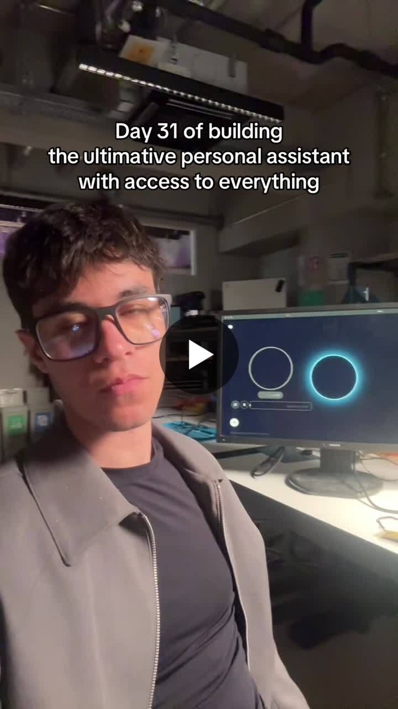

AI agent / A.V.I.C.
A personal assistant that acts.
I connected email, calendar, research and voice into an agent workflow I could use day to day.
ChallengeGiving an assistant useful access while keeping actions understandable.
LearnedGood automation needs clear context and visible control.